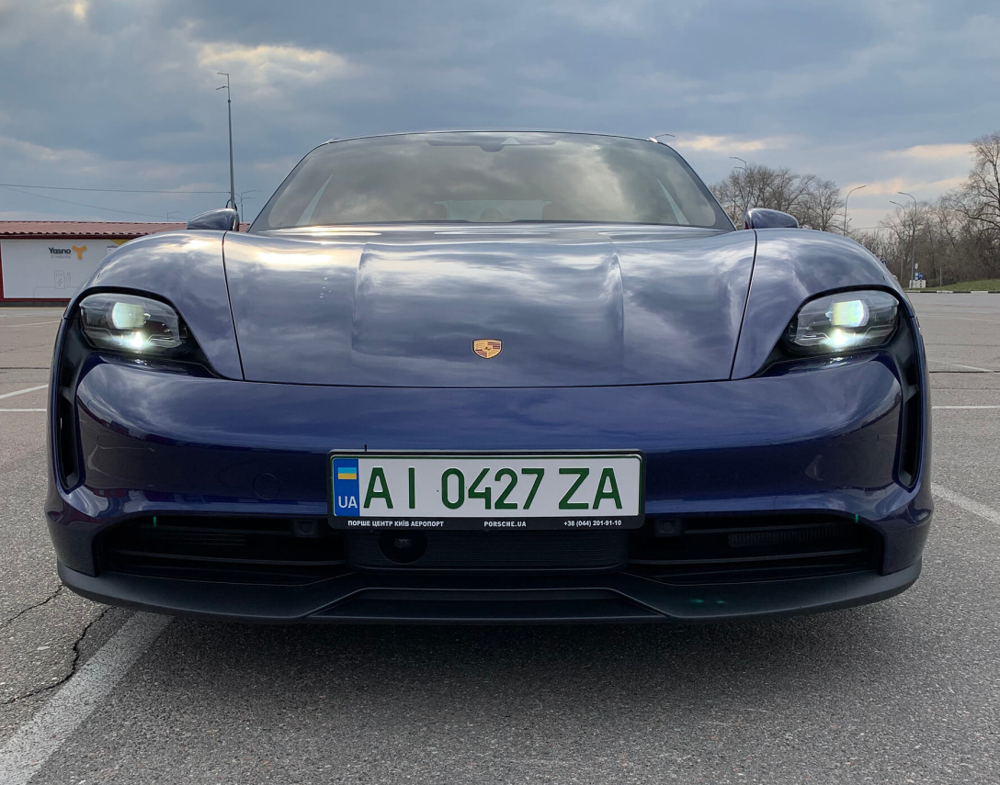

Динаміку Taycan, яка непідготовленій людині може здатися навіть страшною, забезпечують два синхронні електромотори з постійними магнітами на передній і задній осях. У спокійному режимі їзди працює здебільшого передній мотор, задній, більш потужний, підключається під час акселерації.
Огляд Porsche Taycan
Lohner-Porsche мав два електромотори потужністю 2,5 к. с. кожен і міг розігнатися до пристойної на той час швидкості — 40 км/год. Тестовий Porsche Taycan у комплектації 4S має сумарну потужність електродвигунів 530 "коней", розганяється до сотні за 4 секунди, а його максимальна швидкість обмежена інженерами на позначці 260 км/год. У модифікації Turbo S розгін складає взагалі 2,8 сек., що на одну частку секунди швидше, ніж у Tesla Model X Performance, — Фердинанд би пишався електрокаром Porsche Taycan.
Це перший серійний електромобіль Porsche, він був виведений на ринок у 2020 році, а в березні минулого року модель надійшла і в Україну. За рік було продано 89 машин, при тому, що відповідь на питання "скільки коштує Порш Тайкан" починається з позначки 2 млн 584 тис. 320 грн (€76 800) за базову версію. А ціна тестового Porsche Taycan 4S 2021 року становить 4 млн 867 тис. грн, або приблизно €144 тис., причому тільки додаткового обладнання в ньому — на півтора мільйони в національній валюті.
Taycan, як і належить Porsche, спочатку вражає зовнішнім виглядом. Це майже п'ятиметровий седан (довжина — 4 963 мм) із дуже широким капотом (ширина — 1 966 мм) і низьким дорожнім просвітом, який в базі становить 130 мм, але може опускатися до 116 мм або підніматися до 148 мм, залежно від налаштувань пневмопідвіски. У цьому році з'явився і варіант кузова Cross Turismo, що нагадує універсал. У такому виконанні машина трохи вища та має повноцінний пластиковий обвіс.
Лінії даху, що різко спадають, гострий профіль "носа", низько опущеного до землі, величезні роздуті крила, які видно навіть із салону — ось найпомітніші риси спортивно-агресивного вигляду Taycan. 21-дюймові колеса з гальмівними дисками, покритими карбідом вольфраму, світлодіодні матричні фари, безрамкові стекла дверей — цю машину можна розглядати довго, захоплюючись кожною деталлю, що й робили перехожі та інші водії протягом усього тест-драйву.
Запас ходу Porsche Taycan
Запас ходу Porsche Taycan 4S становить від 386 до 463 км, залежно від режиму їзди й інших умов. Величезна літій-іонна батарея Performance Plus ємністю 93,4 кВт/год розташована в підлозі машини, її вага перевищує 600 кг, тож не дивно, що споряджена маса авто — майже 2,3 т.
Porsche Taycan — перший електрокар із 800-вольтою напругою тягової електросистеми (у Tesla та інших серійних електромобілів цей показник здебільшого вдвічі менший), що на практиці означає унікальні на сьогодні характеристики: швидкість зарядки дозволяє поповнити запас ходу на 100 км від джерела постійного струму в 800 В і 270 кВт можна за п'ять хвилин! А запас енергії до 80% від зарядки тієї ж потужності поповнюється за 22,5 хв. Інше питання, що похвалитися такими станціями в Європі може мережа IONITY, а в Україні проект офіційного дилера зі створення мережі швидкісної зарядки зараз у стадії реалізації: зарядитися від 5 до 80% на них можна буде всього за 25 хв.
Ну а поки з доступних у нас варіантів джерело струму в 400 В і 50 кВт заряджає батарею до 80% за 93 хв., від найпоширенішої в Україні станції в 11 кВт електокар заряджається повністю за 8 годин.
Виробник обіцяє термін служби батареї 15 років, при цьому 8 років, або 160 тис. км пробігу покриваються гарантією. Цікаво, що, за словами інженерів Porsche, Taycan можна використовувати за будь-якої температури, аж до -40 градусів Цельсія. Однак потрібно розуміти, що всі параметри роботи батареї — і витрата енергії, і час на підзарядку — за мінусової температури будуть нижчими.
Швидкість течії
Технічні характеристики Porsche Taycan
- Тип кузова — чотирьохдверний седан
- Двигуни — два електромотори на постійних магнітах сумарною потужністю 530 к. с.
- Запас ходу в змішаному циклі — 386-463 км
- Максимальна швидкість обмежена 260 км/год
- Розгін із 0 до 100 км/год — 4 сек.
- Трансмісія — два планетарні редуктори
- Привід — повний